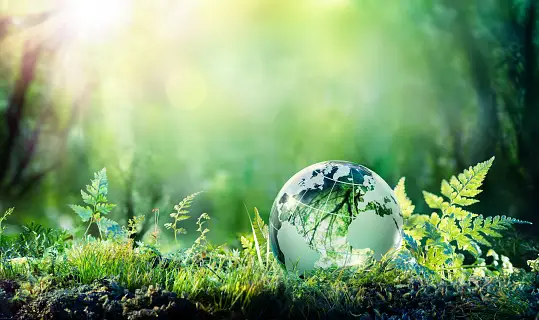

Welcome to ALFSU - Our Climate Saving Environment Page
Your gateway to environmental advocacy and action! We're excited to have you join us on our journey toward a greener, more sustainable future. Here, you'll discover a wealth of resources, from insightful articles to captivating galleries, all aimed at raising awareness and inspiring positive change. Together, let's embark on this mission to protect and preserve our precious planet. Start exploring, get inspired, and let's make a difference together!
Mission Statement
At ALFSU, we are on a mission to champion environmental conservation and combat the urgent threat of climate change. Through our comprehensive resources, including articles, guides, and a dedicated climate-saving environment gallery, we aim to raise awareness and inspire action towards a more sustainable future. By showcasing the beauty of our planet and highlighting the pressing need for preservation, we empower individuals to become stewards of the environment and drive positive change. Together, let's protect and nurture our planet for generations to come.
Articles about discover Crucial Insights into Climate Change and Its Ramifications:
Renewable Energy's Key Role in Climate Action:
As everyone knows we as a species rely on vast amounts of energy in out daily lives. In general, there are two types of energy being renewable & non-renewable, examples of renewable energy sources include; wind, solar and nuclear, whereas non-renwable energy resources include fossil fuels which are coal, oil and natural gas these are also called finite resources as they will run out. Furthermore, by incressingly using fossil fuels, we increase our greenhouse emissions which can result in great climate change implications. However, by using renewable energy sources we can help decrease the greenhouse gases which greatly help mitigate climate change. In addition, by protecting naturally occuring ecosystems, we are further developing hydropower sources of electresity and bioenergy. Click here or on the image for more info on the content.
Exploring Sustainability in the Face of Climate Change:
Exploring Sustainability: Weather, Mobility, Finance, Efficiency delves into crucial aspects of sustainable development. It examines weather's impact and the need for climate adaptation, explores eco-friendly mobility solutions, addresses financial risks, and underscores efficiency strategies for lasting environmental and economic sustainability. Click here or on the image for more info on the content.
Climate Change and Its Impacts:
Climate change is a significant global issue with far-reaching consequences. Rising temperatures, shifting weather patterns, and melting ice caps are just a few of the effects impacting ecosystems and societies worldwide. Understanding these impacts is crucial for developing effective mitigation and adaptation strategies. Click here or on the image for more info on the content.

Life under the sea:
Sea life is important to the environment as it is a vital part to making the environment a better place. The sea is home to many species living in the ocean, it is their home and we littering and wasting it's water can cause harm to them, their habitat and us. We should take action immediately so we can make a safer environment for all of us. Click here or on the image for more info on the content.